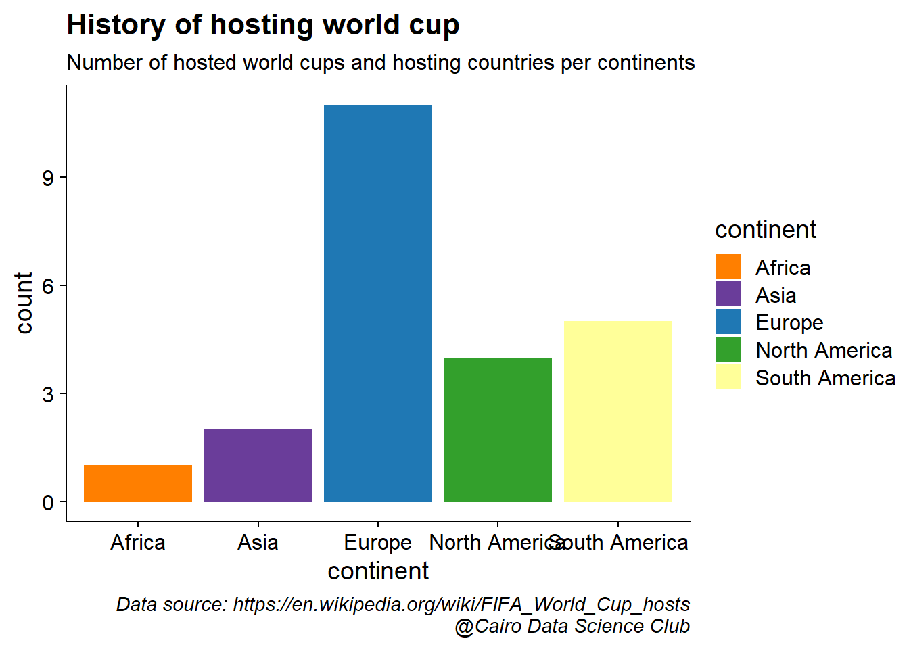
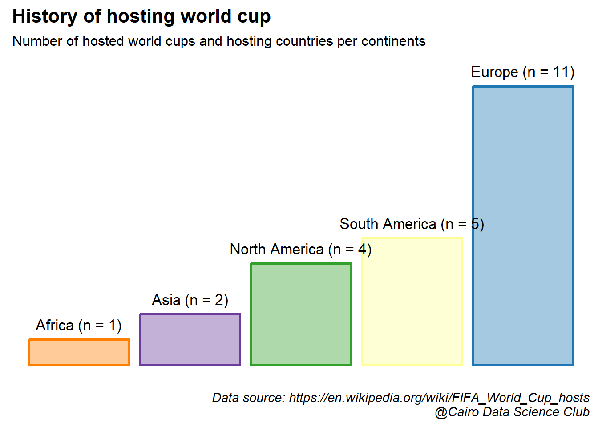
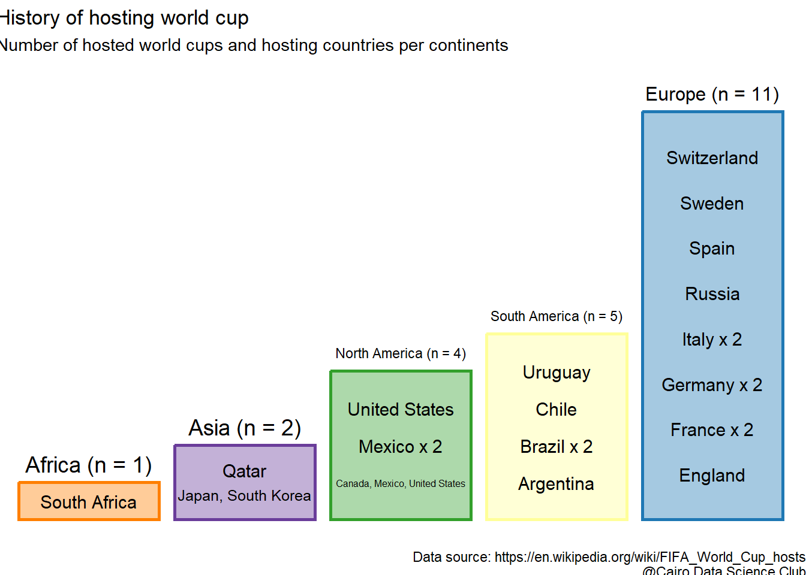

1.2 How many world cups were hosted in each continent?
Before embarking on our colorful journey of data visualization, let’s define a caption that credits the source of the data and the analysis.
caption_cdc <- glue::glue("Data source: {url}\n@Cairo Data Science Club")
theme_update(plot.caption = element_text(face = "italic"))We’ll start by having a quick look at the data.
gt::gt(head(tbls_lst$list_of_hosts))| host_year | country_name | continent | country_code |
|---|---|---|---|
| 1930 | Uruguay | South America | UY |
| 1934 | Italy | Europe | IT |
| 1938 | France | Europe | FR |
| 1942 | Cancelled because of World War II | Cancelled because of World War II | NA |
| 1946 | Cancelled because of World War II | Cancelled because of World War II | NA |
| 1950 | Brazil | South America | BR |
The table shows individual hosting countries of all world cups. But more than one country can cohost the same championship. What we need is a table of cohosts per world cup. To data that, we’ll start by excluding the dates in which the championship was cancelled because of Warld War II and combine cohosts of the same year.
df_host1 <- tbls_lst$list_of_hosts %>%
filter(!str_detect(continent, "Cancelled")) %>% #exclude cancelled events
group_by(host_year) %>%
summarise(across(everything(),
~ paste(unique(.x),collapse = ", ") #combine cohosts
)
) %>%
ungroup() %>%
as.data.frame()
gt::gt(df_host1)| host_year | country_name | continent | country_code |
|---|---|---|---|
| 1930 | Uruguay | South America | UY |
| 1934 | Italy | Europe | IT |
| 1938 | France | Europe | FR |
| 1950 | Brazil | South America | BR |
| 1954 | Switzerland | Europe | CH |
| 1958 | Sweden | Europe | SE |
| 1962 | Chile | South America | CL |
| 1966 | England | Europe | NA |
| 1970 | Mexico | North America | MX |
| 1974 | Germany | Europe | DE |
| 1978 | Argentina | South America | AR |
| 1982 | Spain | Europe | ES |
| 1986 | Mexico | North America | MX |
| 1990 | Italy | Europe | IT |
| 1994 | United States | North America | US |
| 1998 | France | Europe | FR |
| 2002 | Japan, South Korea | Asia | JP, KR |
| 2006 | Germany | Europe | DE |
| 2010 | South Africa | Africa | ZA |
| 2014 | Brazil | South America | BR |
| 2018 | Russia | Europe | RU |
| 2022 | Qatar | Asia | QA |
| 2026 | Canada, Mexico, United States | North America | CA, MX, US |
Let’s look at a basic bar plot of the data
(bar_host_plt <- df_host1 %>%
ggplot(aes(continent))+
geom_bar())
This doesn’t look pretty. Let’s make it more attractive! First, let’s add a some colors.
#Assign colors to each continent
conti_cols <- c(Europe = "#1f78b4",
Asia = "#6a3d9a",
`South America` = "#ffff99",
`North America` = "#33a02c",
Africa = "#ff7f00")… and have another look on the plot.
#show colors in the plot
(bar_host_plt <- bar_host_plt +
geom_bar(aes(fill = continent))+
scale_color_manual(values = conti_cols)+
scale_fill_manual(values = conti_cols))
Now let’s add some text to give context to the visualized data.
(bar_host_plt <- bar_host_plt +
labs(title = "History of hosting world cup",
subtitle = "Number of hosted world cups and hosting countries per continents",
caption = caption_cdc))
Next, let’s order continents by number of hosted games
df_host2 <- df_host1 %>%
group_by(continent) %>%
summarise(n = n())%>% #number of world cups per continent
ungroup() %>%
arrange(n) %>%
mutate(continent = factor(continent, levels = unique(continent))) #set continents order based on number of hostsand add a vector of characters showing both the name of continent and number of hosted cups to label each bar.
df_host_3 <- df_host2 %>%
mutate(cont_n = glue::glue("{continent} (n = {n})"))Let’s put things together and have a look on the updated plot. Also, I think we can safely remove the axis and rather add the labels from the previous step on top of each bar.
(bar_host_plt <- df_host2 %>%
ggplot(aes(continent, n))+
#add a layer of bars with white fill and colored borders
geom_col(aes(color = continent),
fill = "white",
show.legend = FALSE,
linewidth = 1)+
#then add another layer of bars with transparent fill
geom_col(aes(fill = continent),
alpha = 0.4,
show.legend = FALSE)+
#add the text labels on top of the bars
geom_text(data = df_host_3,
aes(label = cont_n),
size = 4.5,
nudge_y = 0.6)+
labs(title = "History of hosting world cup",
subtitle = "Number of hosted world cups and hosting countries per continents",
caption = caption_cdc)+
#define fill and colors of the bars
scale_color_manual(values = conti_cols)+
scale_fill_manual(values = conti_cols)+
#define the theme
theme(axis.line = element_blank(),
axis.ticks = element_blank(),
axis.text = element_blank(),
axis.title = element_blank()))
These long bars, there’s something about them. Something … empty. I got an idea! Why not fill them with the names of the hosting countries?! That would look awesome!
The goal is stack countries’ names in an equidistant fashion within each bar. To do this, we divide the bar, which indicates the number of hosted world cups, by the number of hosting countries. This would simply partition the bar into equally-sized parts equal to the number of hosting countries. Finally, to get the location of countries within the bar, we compute the cumulative sum of the size of these parts.
df_txt_bar <- df_host1 %>%
group_by(continent, country_name) %>%
summarise(n_host = n()) %>% # number of hosted world cups per country
group_by(continent) %>%
mutate(n_countries = n(), #number of hosting countries
n_cont = sum(n_host), #number of hosted world cups per continent (height of the bar)
prop = n_cont/(n_countries+1), # divides the bar height by the number of countries
cum_prop = cumsum(prop) #stack countries' names within the bar
)%>%
ungroup() %>%
mutate(country_name = ifelse(n_host >1 , glue::glue("{country_name} x {n_host}"), country_name) # indicate the number of times a country hosted the world cup
) ## `summarise()` has grouped output by 'continent'. You can override using the
## `.groups` argument.Let’s fill these empty bars with the names of the hosting countries
(bar_host_plt <- bar_host_plt +
geom_text(data = df_txt_bar,
aes(y = cum_prop, label = country_name),
size = 4
))
This looks really beautiful, but with some deficits. One can notice some names of co-hosting countries and continents that are “overflowing” outside their bar.
Let’s fix this by setting the boundaries of the each bar. First, let’s calculate the boundaries
#set the boundaries as 0.45 on each from the center of the bar
df_txt_bar2 <- df_txt_bar %>%
mutate(continent = factor(continent, levels = levels(df_host2$continent)),
x = as.integer(as.factor(continent)), #get the center of the bar
xmin = x-0.45, #lower bound
xmax = x+0.45) #upper bound… then apply them to the plot using geom_fit_text from ggfittext package
(bar_host_plt <- df_host2 %>%
ggplot(aes(continent, n))+
geom_col(aes(color = continent), fill = "white", show.legend = FALSE, linewidth = 1)+
geom_col(aes(fill = continent), alpha = 0.4, show.legend = FALSE)+
#continent name
ggfittext::geom_fit_text(data = df_host_3 %>%
mutate(x = as.integer(as.factor(continent)),
xmin = x-0.45,
xmax = x+0.45),
aes(y = n+0.5, xmin = xmin, xmax = xmax, label = cont_n),
size =14
)+
#Short countries' names
geom_text(data = df_txt_bar[-c(2,12),],
aes(y = cum_prop, label = country_name),
size = 4
)+
#Add "Japan South Korea"
ggfittext::geom_fit_text(data =df_txt_bar2[2,],
aes(y = cum_prop,xmin = xmin, xmax = xmax, label = country_name),
size = 14
)+
#Add "Canada, Mexico, United States"
ggfittext::geom_fit_text(data =df_txt_bar2[12,],
aes(y = cum_prop,xmin = xmin, xmax = xmax, label = country_name),
size = 14
)+
labs(title = "History of hosting world cup",
subtitle = "Number of hosted world cups and hosting countries per continents",
caption = caption_cdc)+
scale_color_manual(values = conti_cols)+
scale_fill_manual(values = conti_cols)+
theme_nothing())
This worked nicely! I will finalize this plot by adding an image of world cup in the background! Yes, you can do this in R. I got the code for the function trasparent used below from an answer here.
#get image
wc_img <- here::here("images/wc12.png")
#define function to control transparency and set to 0.2
transparent <- function(img) {
magick::image_fx(img, expression = "0.2*a", channel = "alpha")
}
#add the image in the background
bar_host_plt+
ggimage::geom_image(data = data.frame(x = 1.5, y = 7.5),
aes(x,y),
image = wc_img,image_fun = transparent,
size = 1)Isn’t that nice?!

Let’s add some geographical-context to these results by throwing the data on the world map and see how it would look like.
#get map of the world
world <- ne_countries(scale = "medium", returnclass = "sf")
head(world)## Simple feature collection with 6 features and 63 fields
## Geometry type: MULTIPOLYGON
## Dimension: XY
## Bounding box: xmin: -70.06611 ymin: -18.01973 xmax: 74.89131 ymax: 60.40581
## CRS: +proj=longlat +datum=WGS84 +no_defs +ellps=WGS84 +towgs84=0,0,0
## scalerank featurecla labelrank sovereignt sov_a3 adm0_dif level
## 0 3 Admin-0 country 5 Netherlands NL1 1 2
## 1 1 Admin-0 country 3 Afghanistan AFG 0 2
## 2 1 Admin-0 country 3 Angola AGO 0 2
## 3 1 Admin-0 country 6 United Kingdom GB1 1 2
## 4 1 Admin-0 country 6 Albania ALB 0 2
## 5 3 Admin-0 country 6 Finland FI1 1 2
## type admin adm0_a3 geou_dif geounit gu_a3 su_dif
## 0 Country Aruba ABW 0 Aruba ABW 0
## 1 Sovereign country Afghanistan AFG 0 Afghanistan AFG 0
## 2 Sovereign country Angola AGO 0 Angola AGO 0
## 3 Dependency Anguilla AIA 0 Anguilla AIA 0
## 4 Sovereign country Albania ALB 0 Albania ALB 0
## 5 Country Aland ALD 0 Aland ALD 0
## subunit su_a3 brk_diff name name_long brk_a3 brk_name
## 0 Aruba ABW 0 Aruba Aruba ABW Aruba
## 1 Afghanistan AFG 0 Afghanistan Afghanistan AFG Afghanistan
## 2 Angola AGO 0 Angola Angola AGO Angola
## 3 Anguilla AIA 0 Anguilla Anguilla AIA Anguilla
## 4 Albania ALB 0 Albania Albania ALB Albania
## 5 Aland ALD 0 Aland Aland Islands ALD Aland
## brk_group abbrev postal formal_en formal_fr note_adm0
## 0 <NA> Aruba AW Aruba <NA> Neth.
## 1 <NA> Afg. AF Islamic State of Afghanistan <NA> <NA>
## 2 <NA> Ang. AO People's Republic of Angola <NA> <NA>
## 3 <NA> Ang. AI <NA> <NA> U.K.
## 4 <NA> Alb. AL Republic of Albania <NA> <NA>
## 5 <NA> Aland AI Åland Islands <NA> Fin.
## note_brk name_sort name_alt mapcolor7 mapcolor8 mapcolor9 mapcolor13
## 0 <NA> Aruba <NA> 4 2 2 9
## 1 <NA> Afghanistan <NA> 5 6 8 7
## 2 <NA> Angola <NA> 3 2 6 1
## 3 <NA> Anguilla <NA> 6 6 6 3
## 4 <NA> Albania <NA> 1 4 1 6
## 5 <NA> Aland <NA> 4 1 4 6
## pop_est gdp_md_est pop_year lastcensus gdp_year economy
## 0 103065 2258.0 NA 2010 NA 6. Developing region
## 1 28400000 22270.0 NA 1979 NA 7. Least developed region
## 2 12799293 110300.0 NA 1970 NA 7. Least developed region
## 3 14436 108.9 NA NA NA 6. Developing region
## 4 3639453 21810.0 NA 2001 NA 6. Developing region
## 5 27153 1563.0 NA NA NA 2. Developed region: nonG7
## income_grp wikipedia fips_10 iso_a2 iso_a3 iso_n3 un_a3 wb_a2
## 0 2. High income: nonOECD NA <NA> AW ABW 533 533 AW
## 1 5. Low income NA <NA> AF AFG 004 004 AF
## 2 3. Upper middle income NA <NA> AO AGO 024 024 AO
## 3 3. Upper middle income NA <NA> AI AIA 660 660 <NA>
## 4 4. Lower middle income NA <NA> AL ALB 008 008 AL
## 5 1. High income: OECD NA <NA> AX ALA 248 248 <NA>
## wb_a3 woe_id adm0_a3_is adm0_a3_us adm0_a3_un adm0_a3_wb continent
## 0 ABW NA ABW ABW NA NA North America
## 1 AFG NA AFG AFG NA NA Asia
## 2 AGO NA AGO AGO NA NA Africa
## 3 <NA> NA AIA AIA NA NA North America
## 4 ALB NA ALB ALB NA NA Europe
## 5 <NA> NA ALA ALD NA NA Europe
## region_un subregion region_wb name_len long_len
## 0 Americas Caribbean Latin America & Caribbean 5 5
## 1 Asia Southern Asia South Asia 11 11
## 2 Africa Middle Africa Sub-Saharan Africa 6 6
## 3 Americas Caribbean Latin America & Caribbean 8 8
## 4 Europe Southern Europe Europe & Central Asia 7 7
## 5 Europe Northern Europe Europe & Central Asia 5 13
## abbrev_len tiny homepart geometry
## 0 5 4 NA MULTIPOLYGON (((-69.89912 1...
## 1 4 NA 1 MULTIPOLYGON (((74.89131 37...
## 2 4 NA 1 MULTIPOLYGON (((14.19082 -5...
## 3 4 NA NA MULTIPOLYGON (((-63.00122 1...
## 4 4 NA 1 MULTIPOLYGON (((20.06396 42...
## 5 5 5 NA MULTIPOLYGON (((20.61133 60...Additionally we’ll retreive the country code as we’ll need it later.
host_iso2 <- na.omit(unique(tbls_lst$list_of_hosts$country_code))
wcp_hosts <- gisco_get_countries(country = host_iso2,
epsg = 3857# Pseudo-Mercator projection
)
wcp_hosts$iso2 <- host_iso2Let’s plot a basic map of the world using ggplot.
# Base map of the world
(plot <- ggplot(world) +
geom_sf(fill = "grey90") +
theme_nothing() +
theme(panel.background = element_rect(fill = "lightblue")))
Cool! Finally, let’s make the map extra flashy by filling hosting countries with their maps.
# get flags form this repo
flagrepo <- "https://raw.githubusercontent.com/hjnilsson/country-flags/master/png250px/"Finally, we’ll download the flags
# Loop and add
for (iso in host_iso2) {
# Download pic and plot
imgurl <- paste0(flagrepo, tolower(iso), ".png")
tmpfile <- tempfile(fileext = ".png")
download.file(imgurl, tmpfile, quiet = TRUE, mode = "wb")
# Raster
x <- wcp_hosts %>% filter(iso2 == iso)
x_rast <- rasterpic_img(x, tmpfile, crop = TRUE, mask = TRUE)
plot <- plot + layer_spatial(x_rast)
}and add them to world map
plot +
geom_sf(data = wcp_hosts, fill = NA)+
labs(title = "World map of FIFA world cup hosts",
subtitle = "Number of hosted world cups and hosting countries per continents",
caption = caption_cdc)
I’m very happy with the end result!

Have a look at this excellent blog for more details on adding flags to maps This is where I got to know and learn this trick.